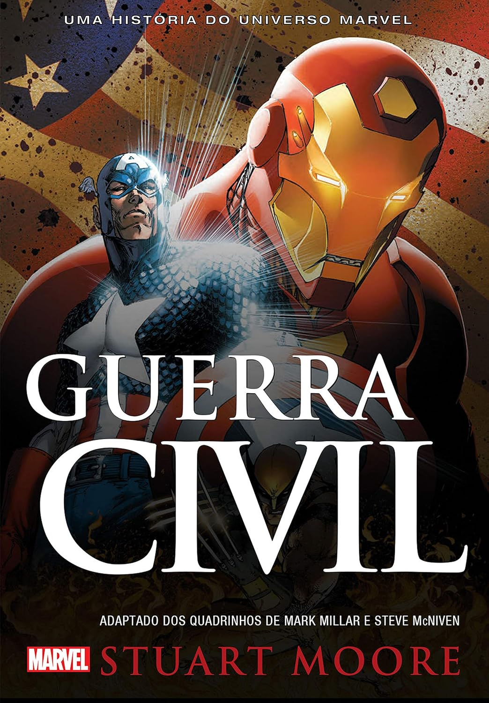
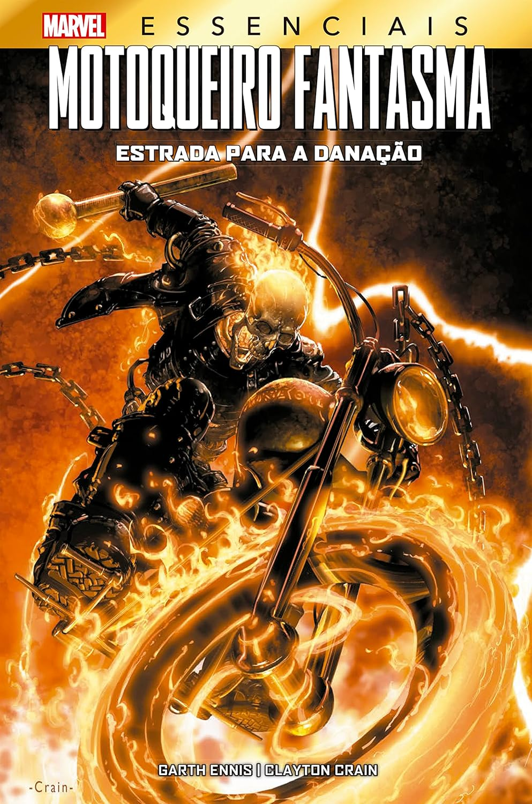
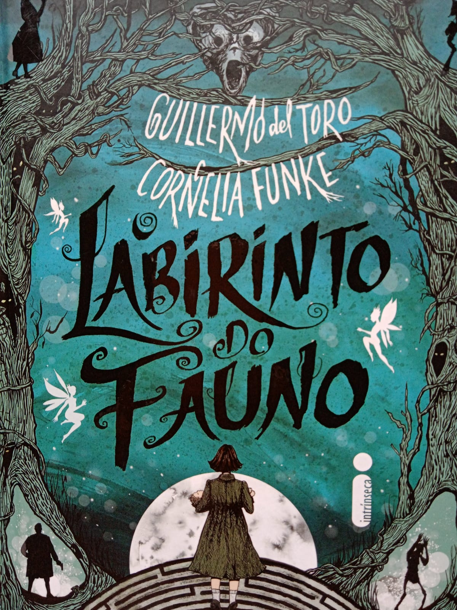

Bem-vindo à nossa Biblioteca Digital
A Biblioteca Digital oferece acesso gratuito a milhares de livros, artigos e recursos educacionais. Explore nosso acervo e descubra um mundo de conhecimento.
Categorias Disponíveis
- Literatura Brasileira
- Ficção Científica
- História e Geografia
- Tecnologia e Computação
- Ciências Naturais
Top 5 Livros Mais Lidos
- Dom Casmurro - Machado de Assis
- 1984 - George Orwell
- O Pequeno Príncipe - Antoine de Saint-Exupéry
- Sapiens - Yuval Noah Harari
- Clean Code - Robert C. Martin
Como Funciona?
- Cadastro
- Crie sua conta gratuita em menos de 2 minutos. Basta preencher o formulário na página de contato.
- Pesquisa
- Utilize nossa ferramenta de busca avançada para encontrar livros por título, autor ou categoria.
- Leitura
- Acesse os livros diretamente no navegador ou faça download em formato PDF ou EPUB.
Livros em Destaque

Guerra Civil (Marvel)
Stuart Moore
A épica história que provoca a separação do Universo Marvel! Homem de Ferro e Capitão América: dois membros essenciais para os Vingadores, a maior equipe de super-heróis do mundo. Quando uma trágica batalha deixa um buraco na cidade de Stamford, matando centenas de pessoas, o governo americano exige que todos os super-heróis revelem sua identidade e registrem seus poderes. Para Tony Stark - o Homem de Ferro - é um passo lamentável, porém necessário, o que o leva a apoiar a lei. Para o Capitão América, é uma intolerável agressão à liberdade cívica. Assim começa a Guerra Civil .
Ler agoraCoraline
Neil Gaiman
Certas portas não devem ser abertas. E Coraline descobre isso pouco tempo depois de chegar com os pais à sua nova casa, um apartamento em um casarão antigo ocupado por vizinhos excêntricos e envolto por uma névoa insistente, um mundo de estranhezas e magia, o tipo de universo que apenas Neil Gaiman pode criar.
Ler agora
Motoqueiro Fantasma: Estrada Para a Danação
Garth Ennis
Johnny Blaze está pagando o preço de seu terrível acordo com o Diabo. Estará seu alter ego, o Motoqueiro Fantasma condenado a trilhar as estradas do Inferno por toda a eternidade? Mas sua chance de salvação pode estar nas mãos de um improvável aliado: um ardiloso anjo, que lhe propõe um trato que o libertaria de sua prisão infernal de uma vez por todas! Uma das minisséries mais elogiadas estrelando o Espírito da Vingança, escrita por ninguém menos que Garth Ennis (Preacher).
Ler agora
O Labirinto do Fauno
Guillermo del Toro
No ano de 1944, Ofélia e a mãe cruzam uma estrada de terra que corta uma floresta longínqua ao norte da Espanha, um lugar que guarda histórias já esquecidas pelos homens. O novo lar é um moinho de vento tomado pela escuridão e pela crueldade do capitão Vidal e seus soldados, dispostos a tudo para exterminar os rebeldes que se escondem na mata.
Ler agoraNovidade!
A partir desta semana, temos uma nova seção de audiolivros disponível para todos os usuários cadastrados.